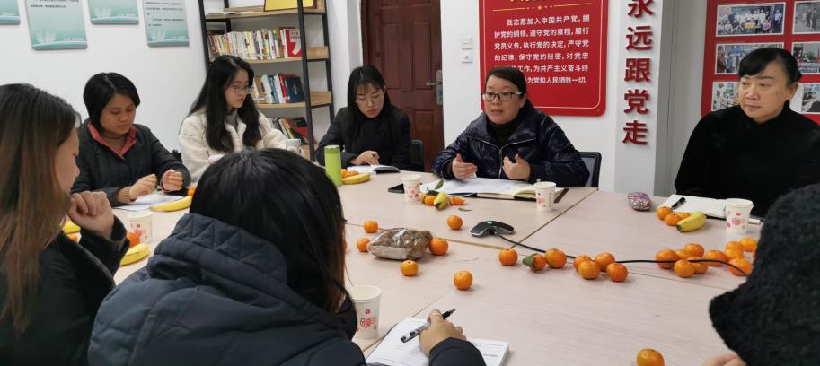
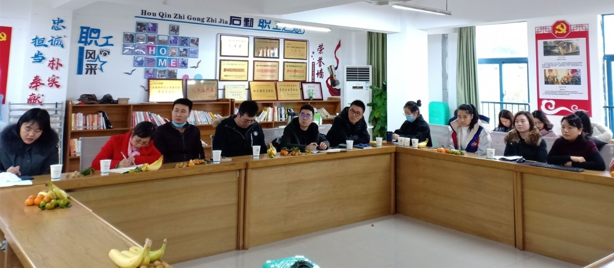

【供稿/党委学工部】为提高新进辅导员业务能力和专业素养，学校于12月9日在合川校区和华岩校区召开了新老辅导员交流双向视频座谈会。


座谈会上，学工部部长唐晓利在会前充分调研的基础上，对新进辅导员反馈的职业成长、工作事务处理等疑点难点问题进行了反馈和沟通，为辅导员如何更好地开展工作提供了良好建议，同时也为新进辅导员提出了“沉下心、认真做、多实践”的殷切期望。来自城建学院和电子学院的两位老师代表新辅导员谈了工作感受和心得；还有三位老师作为老辅导员代表分别从班团建设、事务工作梳理及违纪学生教育管理、心理问题学生关心帮扶几个领域分享了工作经验。学工部副部长周同磊从质量诊断与改进的角度谈了辅导员如何做好学生成长发展的引领人。学工部副部长张兵鼓励新辅导员在工作中踏实进取、发挥主观能动性、坚持不懈地努力，在学工队伍这个大家庭中，在致力于学生成才成才的工作中，焕发自己生命的光彩。